PromiseHub · Video 73
Use the guardian portal
Each child’s schedule, consents and progress, and the family’s announcements, from one verified link
Each child’s schedule, consents and progress, and the family’s announcements, from one verified link
Her children, then Sofía.
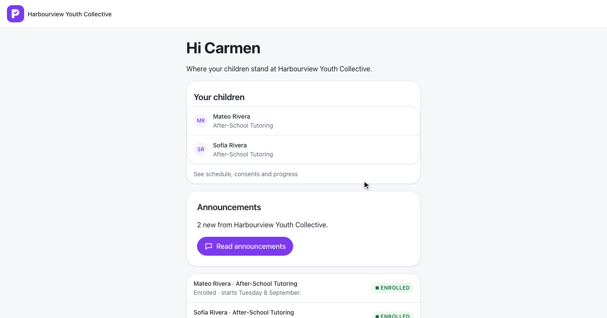
GET /g/home/{token} · children[].programs · announcements · L2-102, L2-103
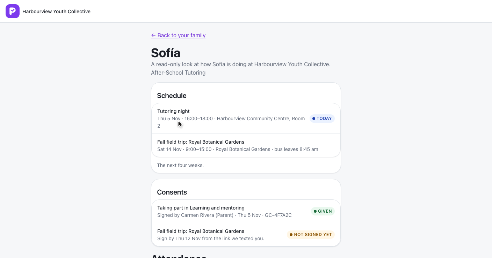
GET /g/home/{token}/children/{childId} · the next 28 days · L2-102, L2-104
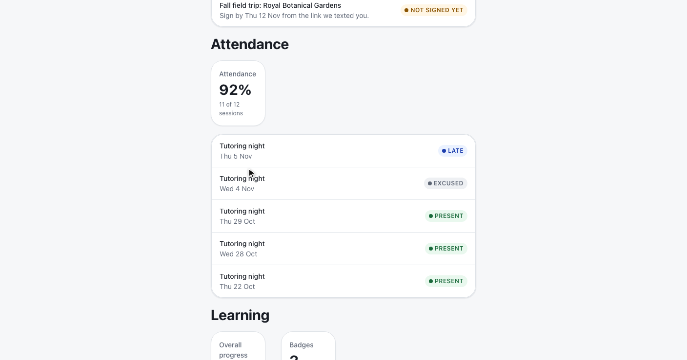
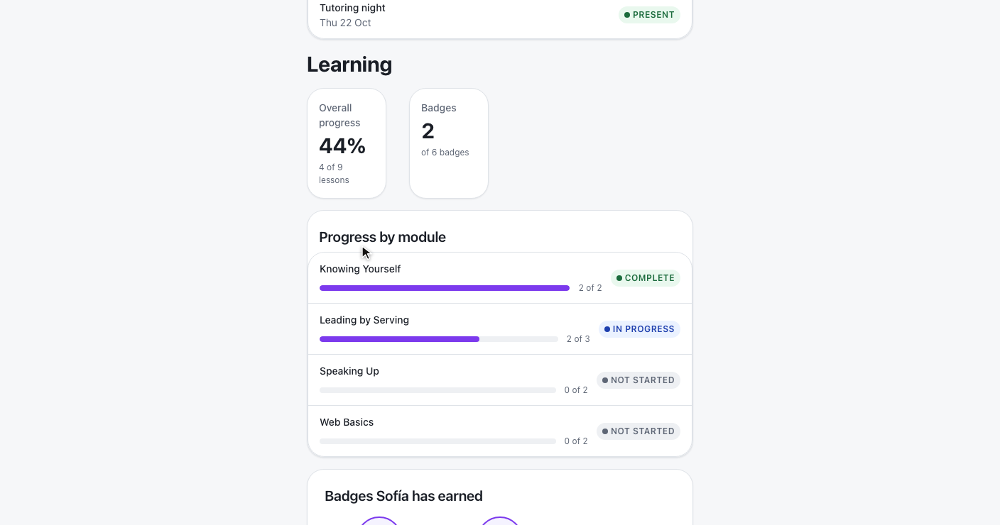
LearnerProgress.ForMembership · LearnerBadges.ForMembership · ADR 0067
| Shown | Never sent |
|---|---|
| Sessions, consents, attendance marks | Lesson content, quiz questions and answers |
| Lessons done per module, badges earned | Reflections, mentor notes, check-ins |
| Her own household’s children | Another family’s or organization’s child (404) |
New, then Mark all read.
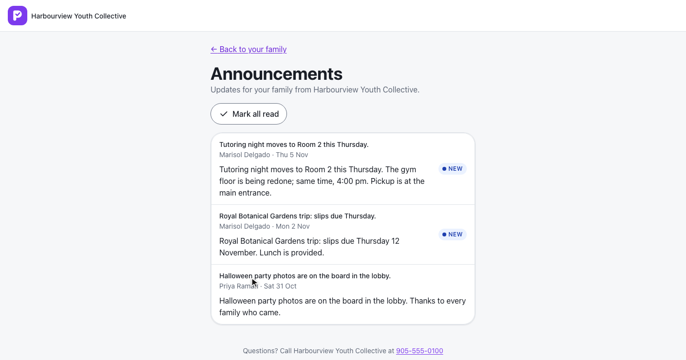
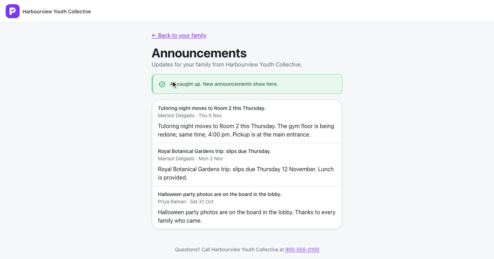
Messages-module deliveries to the household · Delivery.ReadAt · L2-103
L2-104 · L2-011 criterion 7 · L2-026 criterion 4
Family, Sofía, announcements.
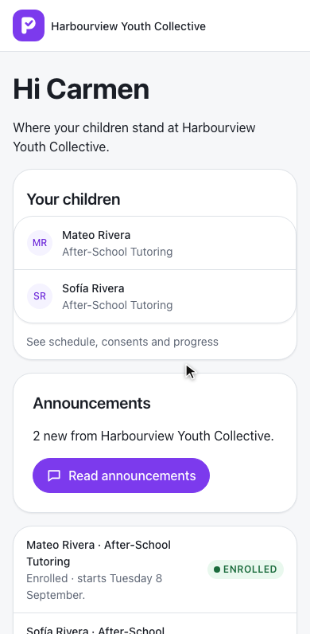
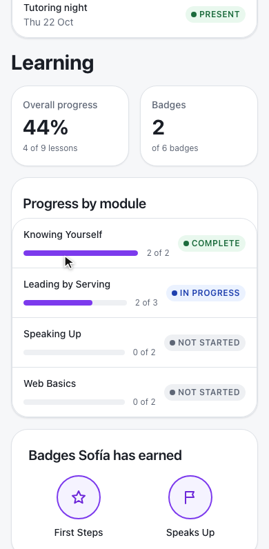
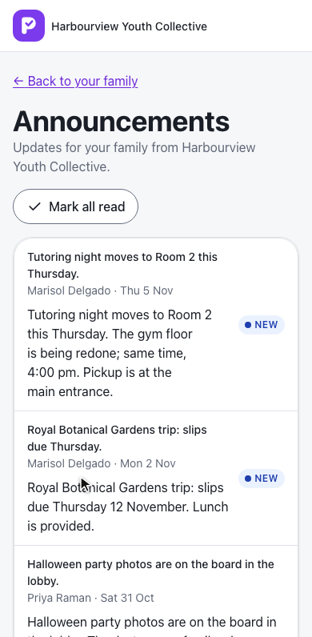
Spanish, Mateo, failed, empty, Messages off, expired.
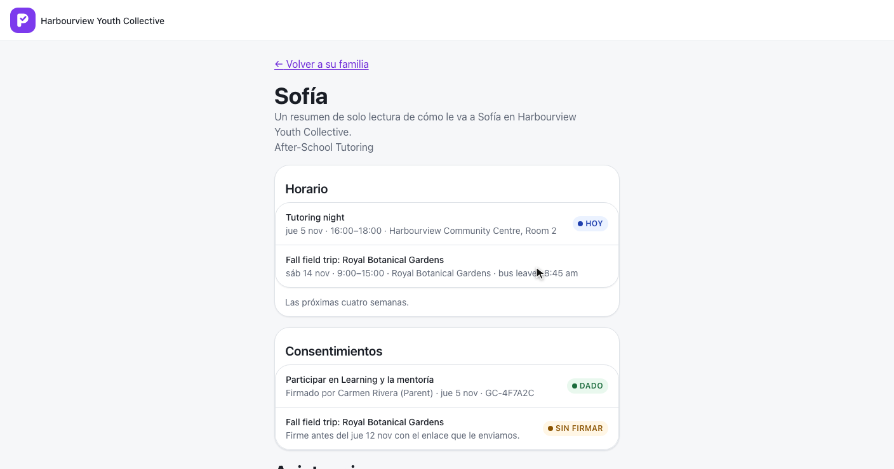
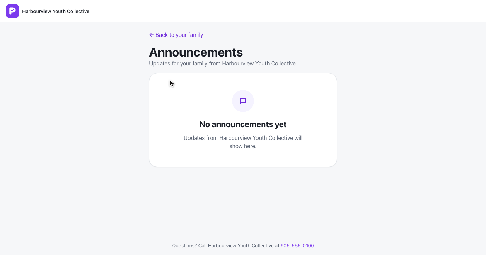
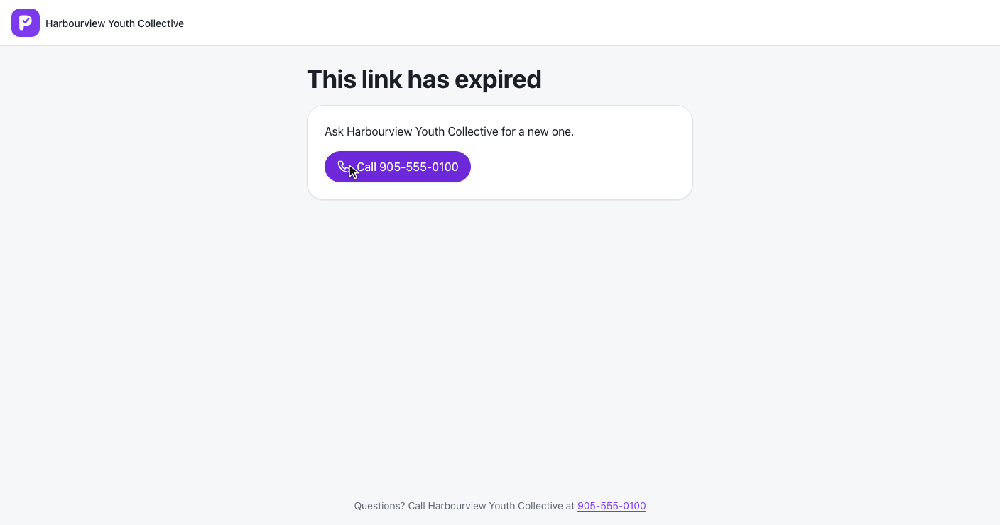
GuardianPortalTests: children, schedule, cancelled, consents, Slips off, attendance, Learning, refusals, Roster offGuardianAnnouncementsTests: unread, Mark all read, other households and organizations, Messages offportal.spec.ts on phone and laptop against the fake API, with axe on every state
Next: announce and message